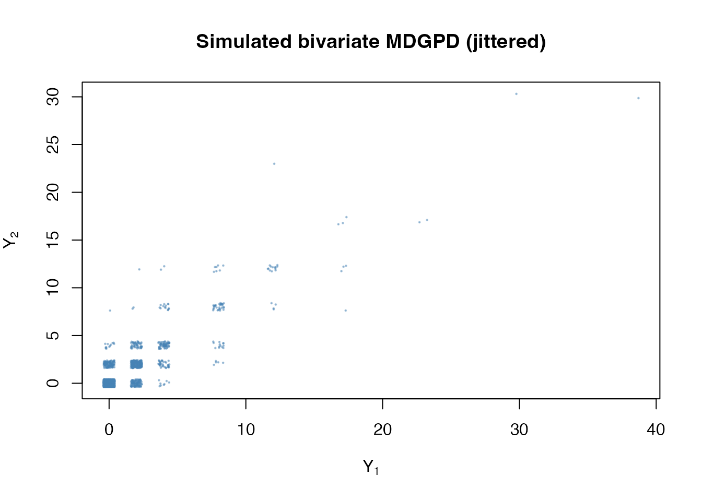
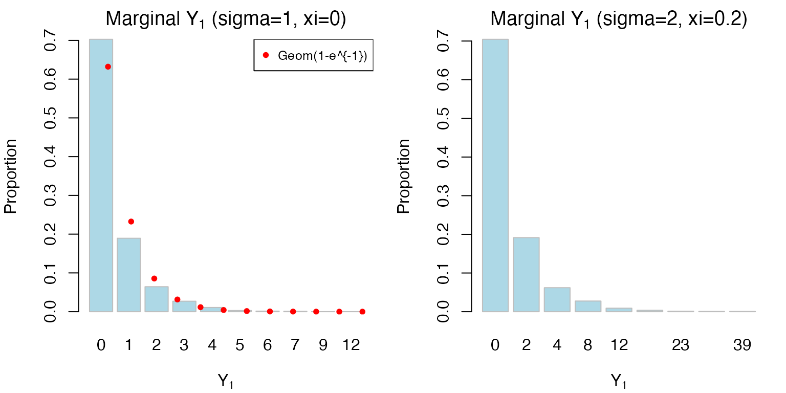
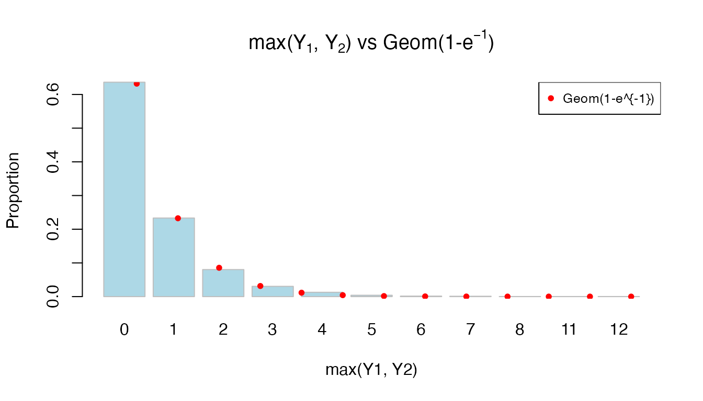
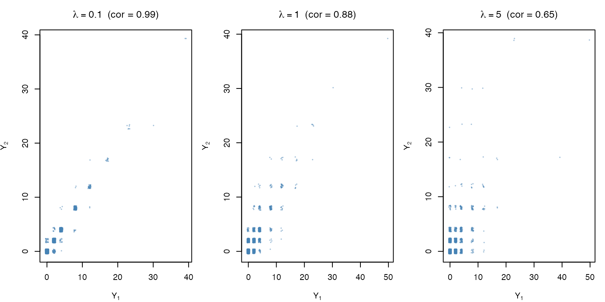
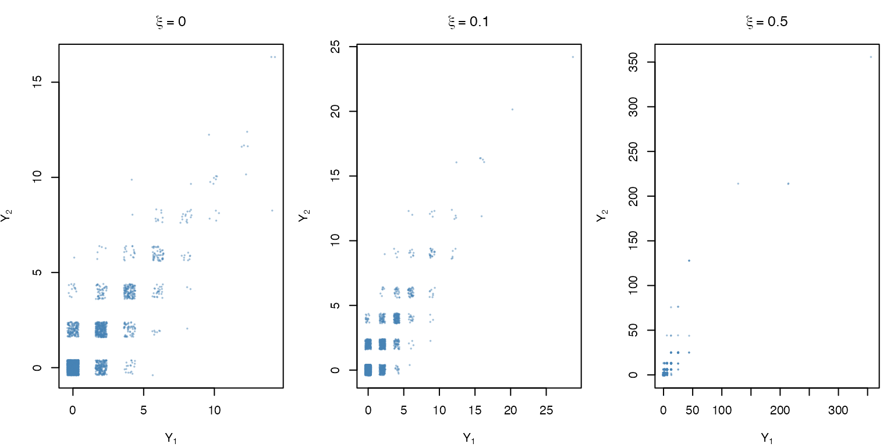
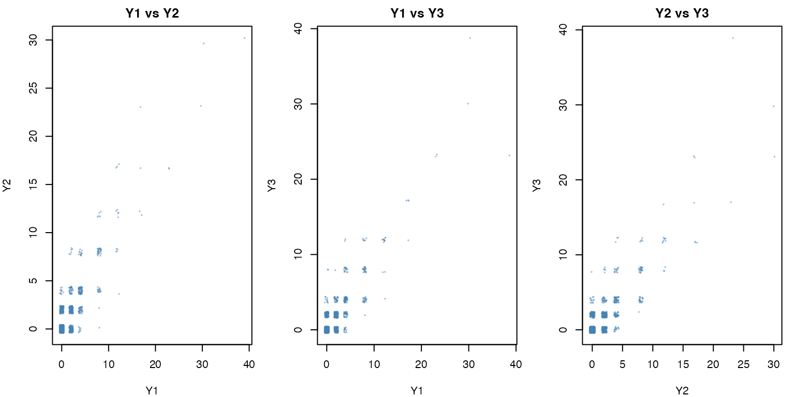
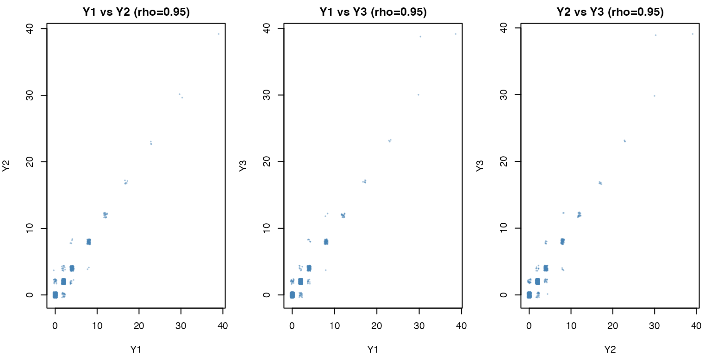
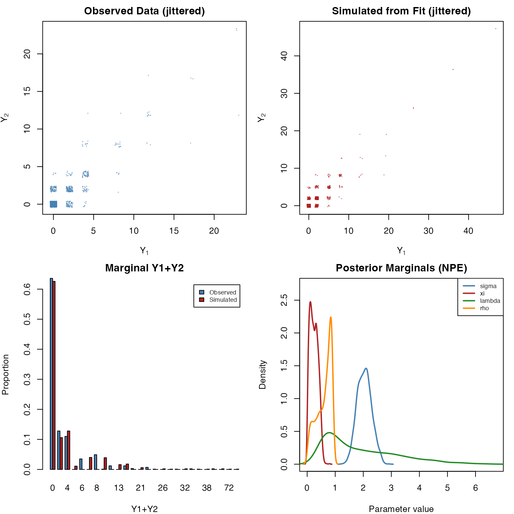
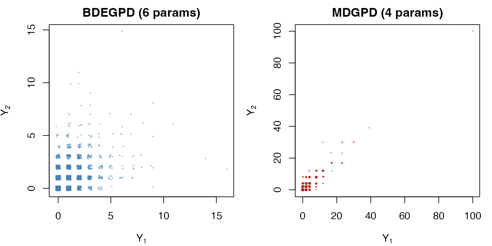

The egpd package provides experimental
support for the Multivariate Discrete Generalized Pareto Distribution
(MDGPD) of Aka, Kratz & Naveau (2025). Unlike the BDEGPD (which
discretizes continuous BEGPD samples via floor()), the
MDGPD is constructed directly in the discrete domain using a bivariate
Poisson generator and geometric maximum, yielding theoretically rigorous
discrete GPD marginals with threshold stability.
This vignette covers:
- The MDGPD construction – from Poisson generator to discrete GPD
-
Simulating multivariate data –
rmdgpd()andrzimdgpd()for dimensions - Exploring parameters and dependence – the role of , , , and
- Higher dimensions – trivariate and beyond
-
Neural Bayes estimation – fitting via
fitegpd() -
Training custom models –
train_mdgpd()
1. The MDGPD construction
Standard MDGPD (geometric marginals)
The Aka-Kratz-Naveau construction builds a -dimensional discrete GPD from three components:
Step 1: Equicorrelated Poisson generator. Generate correlated Poisson random variables via a common random effect:
where is shared across all components and are independent. The correlation between any pair is .
Step 2: Spectral differences. For each component , compute:
This captures how much component exceeds the maximum of all others. Note that when component is not the overall maximum.
Step 3: Geometric maximum. Generate , independently of the Poisson generator.
Step 4: Standard MDGPD. Combine:
The resulting vector has geometric marginals and the property that .
2. Simulating data
Bivariate MDGPD (default)
The rmdgpd() function generates samples from the
-dimensional
MDGPD. It is pure R and does not require Julia.
library(egpd)
set.seed(42)
Y <- rmdgpd(2000, sigma = 2, xi = 0.2, lambda = 1, rho = 0.5)
head(Y)
#> Y1 Y2
#> [1,] 0 0
#> [2,] 0 0
#> [3,] 2 0
#> [4,] 0 0
#> [5,] 2 0
#> [6,] 0 0
cat("Dimensions:", nrow(Y), "x", ncol(Y), "\n")
#> Dimensions: 2000 x 2
cat("Storage mode:", storage.mode(Y), "\n")
#> Storage mode: integer
cat("Range Y1:", range(Y[, 1]), " Range Y2:", range(Y[, 2]), "\n")
#> Range Y1: 0 39 Range Y2: 0 30
plot(jitter(Y[, 1]), jitter(Y[, 2]), pch = 20, cex = 0.3,
xlab = expression(Y[1]), ylab = expression(Y[2]),
main = "Simulated bivariate MDGPD (jittered)",
col = adjustcolor("steelblue", 0.4))
Marginal distributions
The marginals of the non-standard MDGPD are discrete GPD. When and , they reduce to :
set.seed(42)
Y_geom <- rmdgpd(5000, sigma = 1, xi = 0, lambda = 1, rho = 0.5)
op <- par(mfrow = c(1, 2), mar = c(4, 4, 2, 1))
barplot(table(Y_geom[, 1]) / nrow(Y_geom),
main = expression("Marginal " * Y[1] * " (sigma=1, xi=0)"),
xlab = expression(Y[1]), ylab = "Proportion",
col = "lightblue", border = "grey")
## Overlay theoretical Geom(1-e^{-1})
p_geom <- 1 - exp(-1)
k_vals <- 0:max(Y_geom[, 1])
points(seq_along(k_vals), dgeom(k_vals, prob = p_geom),
pch = 16, col = "red", cex = 0.8)
legend("topright", "Geom(1-e^{-1})", pch = 16, col = "red",
cex = 0.8, bg = "white")
## With sigma=2, xi=0.2: heavier tails
barplot(table(Y[, 1]) / nrow(Y),
main = expression("Marginal " * Y[1] * " (sigma=2, xi=0.2)"),
xlab = expression(Y[1]), ylab = "Proportion",
col = "lightblue", border = "grey")
par(op)Maximum component is geometric
A key theoretical property: the component-wise maximum . We verify this for the standard MDGPD (, ):
maxY <- pmax(Y_geom[, 1], Y_geom[, 2])
barplot(table(maxY) / length(maxY),
main = expression("max(" * Y[1] * ", " * Y[2] * ") vs Geom(1-" * e^{-1} * ")"),
xlab = "max(Y1, Y2)", ylab = "Proportion",
col = "lightblue", border = "grey")
k_max <- 0:max(maxY)
points(seq_along(k_max), dgeom(k_max, prob = p_geom),
pch = 16, col = "red", cex = 0.8)
legend("topright", "Geom(1-e^{-1})", pch = 16, col = "red",
cex = 0.8, bg = "white")
Zero-inflated MDGPD
set.seed(42)
Y_zi <- rzimdgpd(2000, sigma = 2, xi = 0.2, lambda = 1, rho = 0.5,
pi0 = 0.3)
joint_zeros <- mean(rowSums(Y_zi) == 0)
cat("Proportion of all-zero rows:", round(joint_zeros, 3), "\n")
#> Proportion of all-zero rows: 0.754
cat("(Expected >= pi0 = 0.3 due to natural zeros)\n")
#> (Expected >= pi0 = 0.3 due to natural zeros)3. The role of parameters
Dependence strength ()
The parameter directly controls the equicorrelation of the Poisson generator. Higher means the common component dominates, making all nearly identical and thus producing near-identical :
set.seed(42)
n_demo <- 3000
rho_vals <- c(0, 0.3, 0.7, 0.95)
op <- par(mfrow = c(2, 2), mar = c(4, 4, 3, 1))
for (rho_v in rho_vals) {
Y_rho <- rmdgpd(n_demo, sigma = 2, xi = 0.2, lambda = 1, rho = rho_v)
cor_val <- cor(Y_rho[, 1], Y_rho[, 2])
plot(jitter(Y_rho[, 1]), jitter(Y_rho[, 2]), pch = 20, cex = 0.3,
main = bquote(rho == .(rho_v) ~ " (cor = " * .(round(cor_val, 2)) * ")"),
xlab = expression(Y[1]), ylab = expression(Y[2]),
col = adjustcolor("steelblue", 0.4))
}
par(op)Spectral spread ()
The parameter controls the Poisson rate. Larger produces larger spectral differences , which in turn makes the more variable relative to :
set.seed(42)
lambda_vals <- c(0.1, 1, 5)
op <- par(mfrow = c(1, 3), mar = c(4, 4, 3, 1))
for (lam_v in lambda_vals) {
Y_lam <- rmdgpd(n_demo, sigma = 2, xi = 0.2, lambda = lam_v, rho = 0.5)
cor_val <- cor(Y_lam[, 1], Y_lam[, 2])
plot(jitter(Y_lam[, 1]), jitter(Y_lam[, 2]), pch = 20, cex = 0.3,
main = bquote(lambda == .(lam_v) ~ " (cor = " * .(round(cor_val, 2)) * ")"),
xlab = expression(Y[1]), ylab = expression(Y[2]),
col = adjustcolor("steelblue", 0.4))
}
par(op)Tail heaviness ()
The shape parameter controls the tail behaviour. Larger produces heavier tails (occasional very large values):
set.seed(42)
xi_vals <- c(0, 0.1, 0.5)
op <- par(mfrow = c(1, 3), mar = c(4, 4, 3, 1))
for (xi_v in xi_vals) {
Y_xi <- rmdgpd(n_demo, sigma = 2, xi = xi_v, lambda = 1, rho = 0.5)
plot(jitter(Y_xi[, 1]), jitter(Y_xi[, 2]), pch = 20, cex = 0.3,
main = bquote(xi == .(xi_v)),
xlab = expression(Y[1]), ylab = expression(Y[2]),
col = adjustcolor("steelblue", 0.4))
}
par(op)4. Higher dimensions
The MDGPD generalises naturally to
dimensions. Simply pass the d parameter to
rmdgpd():
Trivariate MDGPD ()
set.seed(42)
Y3 <- rmdgpd(2000, sigma = 2, xi = 0.2, lambda = 1, rho = 0.5, d = 3)
cat("Dimensions:", nrow(Y3), "x", ncol(Y3), "\n")
#> Dimensions: 2000 x 3
cat("Column names:", colnames(Y3), "\n")
#> Column names: Y1 Y2 Y3
## Pairwise scatter plots
op <- par(mfrow = c(1, 3), mar = c(4, 4, 2, 1))
pairs_list <- list(c(1, 2), c(1, 3), c(2, 3))
for (pr in pairs_list) {
plot(jitter(Y3[, pr[1]]), jitter(Y3[, pr[2]]), pch = 20, cex = 0.3,
main = paste0("Y", pr[1], " vs Y", pr[2]),
xlab = paste0("Y", pr[1]), ylab = paste0("Y", pr[2]),
col = adjustcolor("steelblue", 0.4))
}
par(op)Dependence at high in
set.seed(42)
Y3_high <- rmdgpd(2000, sigma = 2, xi = 0.2, lambda = 1, rho = 0.95, d = 3)
op <- par(mfrow = c(1, 3), mar = c(4, 4, 2, 1))
for (pr in pairs_list) {
plot(jitter(Y3_high[, pr[1]]), jitter(Y3_high[, pr[2]]), pch = 20, cex = 0.3,
main = paste0("Y", pr[1], " vs Y", pr[2], " (rho=0.95)"),
xlab = paste0("Y", pr[1]), ylab = paste0("Y", pr[2]),
col = adjustcolor("steelblue", 0.4))
}
Even higher dimensions
The construction works for any :
set.seed(42)
Y5 <- rmdgpd(1000, sigma = 2, xi = 0.2, lambda = 1, rho = 0.5, d = 5)
cat("5-dimensional MDGPD:", nrow(Y5), "x", ncol(Y5), "\n")
#> 5-dimensional MDGPD: 1000 x 5
cat("Columns:", colnames(Y5), "\n")
#> Columns: Y1 Y2 Y3 Y4 Y5
cat("\nPairwise correlations:\n")
#>
#> Pairwise correlations:
print(round(cor(Y5), 3))
#> Y1 Y2 Y3 Y4 Y5
#> Y1 1.000 0.823 0.831 0.836 0.821
#> Y2 0.823 1.000 0.827 0.821 0.831
#> Y3 0.831 0.827 1.000 0.788 0.813
#> Y4 0.836 0.821 0.788 1.000 0.841
#> Y5 0.821 0.831 0.813 0.841 1.0005. Zero-inflated MDGPD in higher dimensions
The rzimdgpd() function also supports arbitrary
:
6. Neural Bayes estimation
Fitting bivariate MDGPD
The MDGPD has no closed-form likelihood (the construction involves a discrete maximum and floor operations). Neural Bayes estimation is used instead, via pre-trained neural networks.
set.seed(42)
Y <- rmdgpd(1000, sigma = 2, xi = 0.2, lambda = 1, rho = 0.5)
fit <- fitegpd(Y, family = "mdgpd", method = "neuralbayes",
estimator = "npe", nsamples = 2000)
#> Starting Julia ...
summary(fit)
#> Fitting of bivariate MDGPD (Aka-Kratz-Naveau) [Experimental]
#> Method: neuralbayes (npe) [2000 posterior samples]
#>
#> Posterior summary:
#> Median Post.SD 2.5% 97.5%
#> sigma 2.0373 0.2556 1.5729 2.5548
#> xi 0.2339 0.1408 0.0238 0.5114
#> lambda 1.4712 1.2878 0.4035 4.9281
#> rho 0.6811 0.2611 0.0666 0.9148
#>
#> Note: log-likelihood, AIC, and BIC are not available for neural estimation
#> Number of observations: 1000
plot(fit)
Fitting ZIMDGPD
set.seed(42)
Y_zi <- rzimdgpd(1000, sigma = 2, xi = 0.2, lambda = 1, rho = 0.5,
pi0 = 0.3)
fit_zi <- fitegpd(Y_zi, family = "zimdgpd", method = "neuralbayes",
estimator = "npe")
summary(fit_zi)
#> Fitting of zero-inflated bivariate MDGPD (ZIMDGPD) [Experimental]
#> Method: neuralbayes (npe) [1000 posterior samples]
#>
#> Posterior summary:
#> Median Post.SD 2.5% 97.5%
#> sigma 1.7381 0.2975 1.2077 2.3554
#> xi 0.2191 0.1212 0.0162 0.4268
#> lambda 1.6117 1.1618 0.3807 4.7926
#> rho 0.6366 0.2383 0.0965 0.9081
#> pi0 0.2503 0.1101 0.0482 0.4624
#>
#> Note: log-likelihood, AIC, and BIC are not available for neural estimation
#> Number of observations: 1000S3 methods
coef(fit) # Posterior median estimates
#> sigma xi lambda rho
#> 2.037282 0.233938 1.471153 0.681051
confint(fit) # 95% credible intervals
#> 2.5 % 97.5 %
#> sigma 1.57288426 2.5547769
#> xi 0.02377782 0.5114318
#> lambda 0.40350734 4.9280589
#> rho 0.06656750 0.9148393
vcov(fit) # Posterior covariance matrix
#> sigma xi lambda rho
#> sigma 0.0653121330 -0.024736149 -0.005829067 0.0005754695
#> xi -0.0247361487 0.019833619 0.012748590 0.0028251108
#> lambda -0.0058290666 0.012748590 1.658399252 0.2762968616
#> rho 0.0005754695 0.002825111 0.276296862 0.0681657652
nobs(fit) # Number of observations
#> [1] 1000Higher-dimensional estimation
For
,
a separate neural network must be trained for each data dimension, since
the network architecture depends on the input dimension. Use
train_mdgpd() with the data_dim parameter:
# Fit 3D data using a pre-trained model
Y3_fit <- rmdgpd(1000, sigma = 2, xi = 0.2, lambda = 1, rho = 0.5, d = 3)
model_3d_path <- system.file("models", "MDGPD_3D_NPE.bson", package = "egpd")
fit_3d <- fitegpd(Y3_fit, family = "mdgpd", method = "neuralbayes",
model.path = model_3d_path, estimator = "npe")
summary(fit_3d)
#> Fitting of 3-variate MDGPD (Aka-Kratz-Naveau) [Experimental]
#> Method: neuralbayes (npe) [1000 posterior samples]
#>
#> Posterior summary:
#> Median Post.SD 2.5% 97.5%
#> sigma 1.8967 0.2849 1.3838 2.4651
#> xi 0.1942 0.1274 0.0143 0.4506
#> lambda 1.4899 1.2285 0.4130 4.9407
#> rho 0.6957 0.2439 0.0907 0.9179
#>
#> Note: log-likelihood, AIC, and BIC are not available for neural estimation
#> Number of observations: 10007. Comparison: MDGPD vs BDEGPD
The package provides two approaches to bivariate discrete extreme value modelling. They are suited to different settings:
| Aspect | BDEGPD | MDGPD |
|---|---|---|
| Construction | floor(continuous BEGPD) |
Poisson generator + geometric max |
| Theoretical basis | Ad hoc discretization | Threshold-stable discrete GPD |
| Parameters | 6 () | 4 () |
| Dependence | Asymmetric (separate lower/upper tail) | Exchangeable (equicorrelated) |
| Dimensions | 2 only | |
| Marginals | Discrete EGPD | Discrete GPD |
| Threshold stability | Not guaranteed | Yes (by construction) |
When to use BDEGPD: When the data exhibit asymmetric dependence between lower and upper tails, or when you want to directly compare continuous and discrete BEGPD fits with the same parameter set.
When to use MDGPD: When you want a parsimonious model with theoretical threshold stability, exchangeable dependence, and the ability to extend to dimensions.
set.seed(42)
n_cmp <- 3000
Y_bdegpd <- rbdegpd(n_cmp, kappa = 2, sigma = 1.5, xi = 0.1,
thL = 3, thU = 3, thw = 0.2)
Y_mdgpd <- rmdgpd(n_cmp, sigma = 2, xi = 0.2, lambda = 1, rho = 0.5)
op <- par(mfrow = c(1, 2), mar = c(4, 4, 2, 1))
plot(jitter(Y_bdegpd[, 1]), jitter(Y_bdegpd[, 2]), pch = 20, cex = 0.3,
main = "BDEGPD (6 params)",
xlab = expression(Y[1]), ylab = expression(Y[2]),
col = adjustcolor("steelblue", 0.4))
plot(jitter(Y_mdgpd[, 1]), jitter(Y_mdgpd[, 2]), pch = 20, cex = 0.3,
main = "MDGPD (4 params)",
xlab = expression(Y[1]), ylab = expression(Y[2]),
col = adjustcolor("firebrick", 0.4))
par(op)8. Training custom models
MDGPD training
# Quick training for 2D MDGPD
paths <- train_mdgpd(
savepath = tempdir(),
family = "mdgpd",
data_dim = 2L,
estimator = "both",
quick = TRUE,
verbose = TRUE
)
# Quick training for 3D MDGPD
paths_3d <- train_mdgpd(
savepath = tempdir(),
family = "mdgpd",
data_dim = 3L,
estimator = "npe",
quick = TRUE
)
# ZIMDGPD training
paths_zi <- train_mdgpd(
savepath = tempdir(),
family = "zimdgpd",
data_dim = 2L,
estimator = "npe",
quick = TRUE
)References
Aka, S., Kratz, M., and Naveau, P. (2025). Multivariate discrete generalized Pareto distributions: theory, simulation, and applications to dry spells. arXiv preprint arXiv:2506.19361. https://arxiv.org/abs/2506.19361
Sainsbury-Dale, M., Zammit-Mangion, A., and Huser, R. (2024). Likelihood-free parameter estimation with neural Bayes estimators. The American Statistician, 78(1), 1–14.